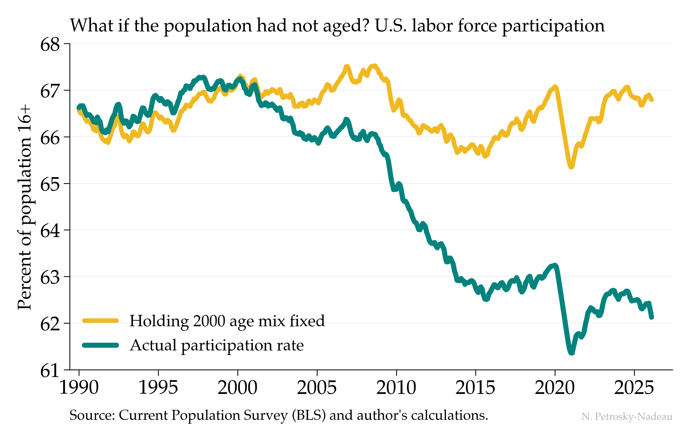
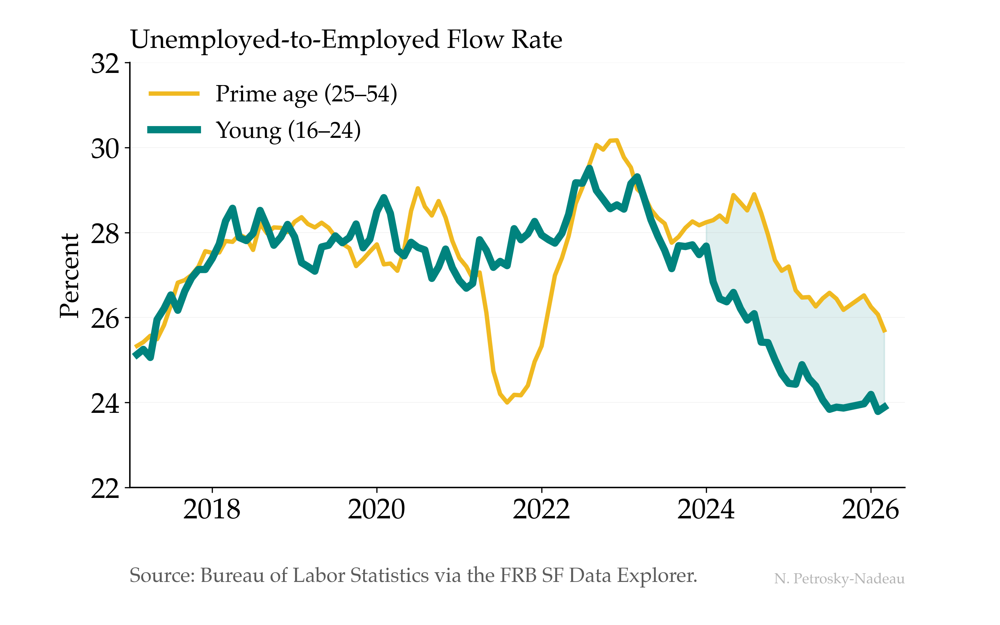
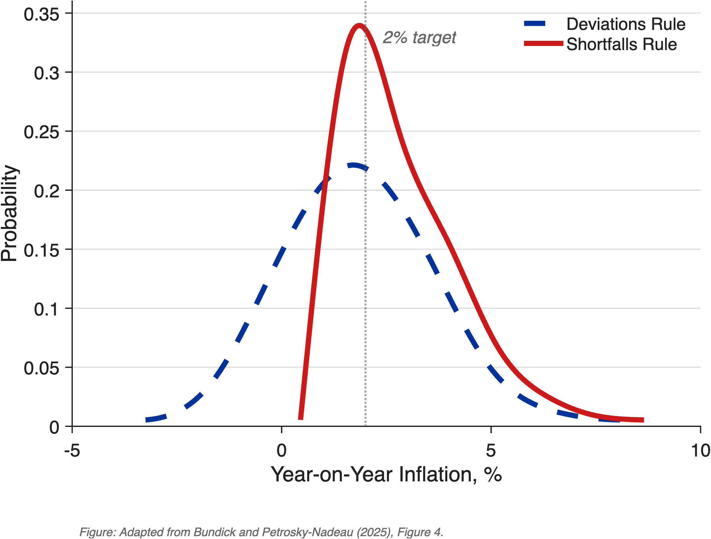
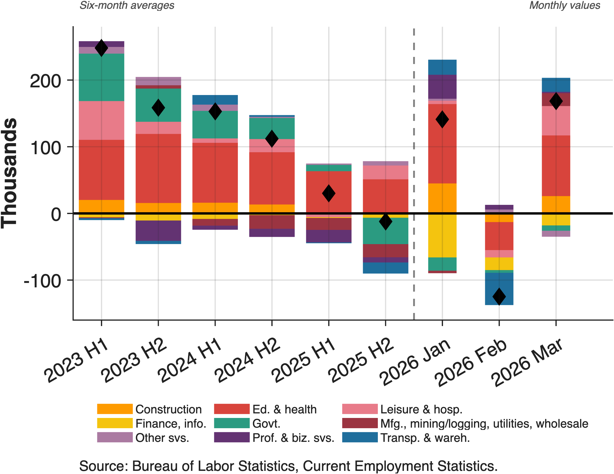
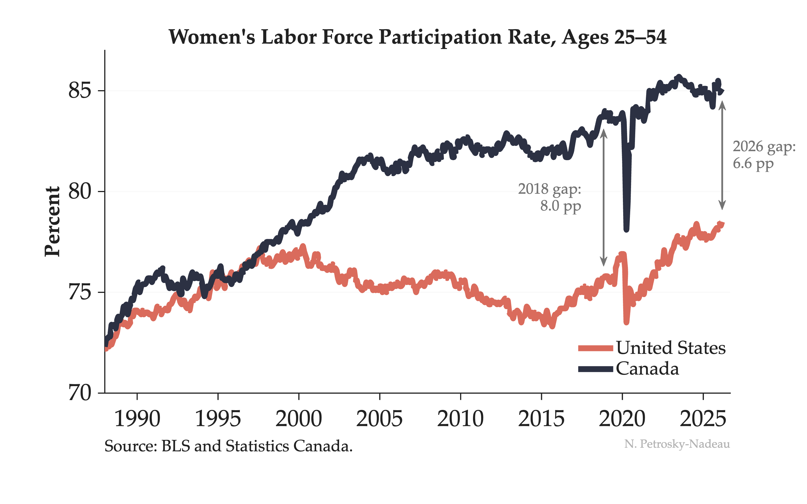
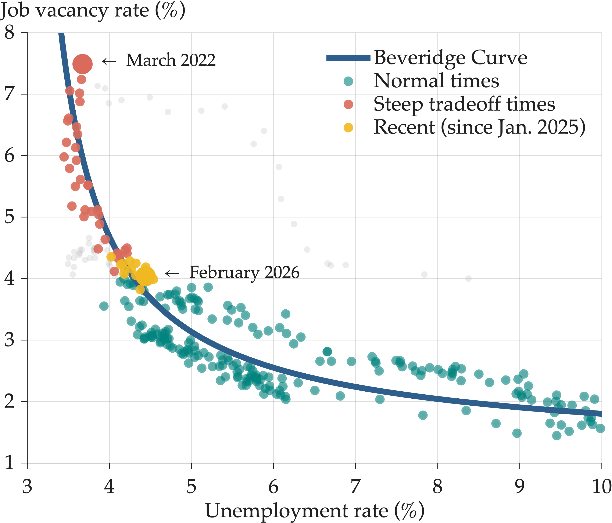
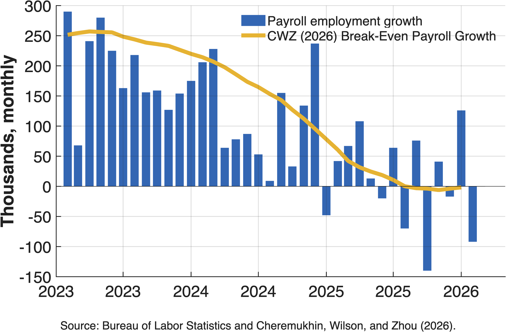

Economic Notes
Brief insights on the economy with key charts
![Screenshot of the interactive Demographic Composition dashboard on the Data page. A view switcher offers Actual vs. counterfactual, What's driving it, Group rates, and Group shares, with a summary strip reading 62.1% participation rate, 66.8% holding the age mix fixed at 2000, and a minus 4.7 percentage point aging effect. The displayed chart plots the actual participation rate (teal) falling from about 67% near 2000 to about 62% by 2026 against a counterfactual holding the year-2000 age mix fixed (salmon) that stays near 67%, with the gap between them shaded.](assets/charts/econ-note-2026-06.png)
What the Overall Participation Rate Hides
The overall labor force participation rate, the share of the population working or looking for work, has fallen about 5 percentage points since 2000, which is often read as a sign that fewer Americans want to work. But an aggregate rate blends how people behave with how the population is composed. Demographic adjustment separates the two, and it shows that population aging, not weaker attachment to work, accounts for almost the entire decline. You can explore the full decomposition in the interactive dashboard on the Data page.
July 2026 · Economic Note 2026-06
![Two-panel chart of what is driving the change in participation since 2000, with age groups ordered youngest to oldest across both panels. The left panel shows each group's contribution to the total change in the participation rate, in percentage points, split into a composition part measured relative to the 2000 aggregate rate (navy) and a behavioral own-rate part (gold), with diamonds marking each group's total; the 55-and-older group is the largest drag, about minus 3.3 points from composition partly offset by a positive own-rate contribution. The right panel shows the change since 2000 in each group's share of the 16-and-older population (navy) and in its own participation rate (gray); the 55-and-older share rises about 11 percentage points.](assets/charts/econ-note-2026-06-drivers.png)

Aging, Not Attachment, Explains the Falling LFPR
I often hear that Americans are less willing to work than they used to be, pointing to a participation rate that has fallen about five points since 2000.
The teal line shows that decline, from a peak near 67% to about 62% today. The gold line asks a different question: what would participation have done if the age distribution of the population had simply stayed at its 2000 mix, with each age group participating as it actually does now? Almost nothing—it sits near 67% throughout. Nearly the entire drop is the baby-boom cohorts aging into their retirement years, not a generation stepping back from work.
Economic Post · July 14, 2026 · Download Data (CSV)
![Line chart of payroll growth against breakeven estimates, thousands of jobs per month, 2023 to 2028. Light gray bars show monthly payroll growth. A teal line, the 12-month average of payroll growth, falls from about 150,000 in 2024 to roughly 40,000 by mid-2026, tracking closely alongside the gold short-run breakeven line the whole way down to near 20,000. The navy long-run breakeven line holds steady near 80,000. Dashed continuations after June 2026 show the short-run line turning back up toward the long-run line by the end of the decade.](assets/charts/econ-note-2026-05.png)
How Many Jobs Is Enough?
The most useful number to have in hand when reading the monthly jobs report may be the pace of hiring that would hold the unemployment rate steady, the “breakeven” pace. Over the past two years, job growth has cooled sharply, from roughly 150,000 to about 40,000 jobs a month, yet unemployment has changed little. The reason is that breakeven fell just as fast. Looking ahead, breakeven is set to rise again as labor force growth returns to its slower demographic trend.
July 2026 · Economic Note 2026-05
![Scatter plot of core PCE inflation (year-over-year) against the unemployment-to-vacancy ratio, monthly. A solid blue line shows the nonlinear Phillips curve fitted through 2023, steep at ratios below 1.0 and flat above. Teal dots (normal times, 2000 to 2017) cluster along the curve. Pink dots (steep tradeoff, since March 2022) descend down the steep segment from a March 2022 peak near a 0.5 ratio and 5.6% inflation. Gold dots (recent, since January 2025) sit above the fitted curve at a ratio near 1.0, with the highlighted May 2026 point at 3.4% inflation versus about 2.5% predicted by the curve. A dashed blue line illustrates an outward shift of the curve through the recent points.](assets/charts/econ-note-2026-04.png)
When the Curve Moves, It's Hard to Stick the Landing
In 2023, my coauthors and I mapped a soft landing down a stable Phillips curve, achieved mainly by shrinking job vacancies rather than raising unemployment. For a while, that is roughly what happened. But the readings since January 2025 no longer sit on that curve. At a fairly normal degree of labor market slack, core PCE inflation has held near 3% and climbed to 3.4% by May 2026, about 0.9 percentage point above what the 2023 curve predicts.
July 2026 · Economic Note 2026-04
![Line chart of the monthly layoff rate as a share of employment, 1978 to 2026, shown as 12-month moving averages. The teal line (prime-age workers 25 to 54) and the faint blue line (all workers 16 and older) both spike in every recession and fall back in expansions, with little overall trend. The salmon line (JOLTS layoffs and discharges, from December 2000) tracks the household-survey series closely over the years they share. The current prime-age trough sits near 1%, in line with prior strong-expansion lows.](assets/charts/econ-note-2026-03.png)
How Unusual Is Today's Low-Fire Labor Market?
Commentators describe today's labor market as “low-fire,” but that reading rests largely on JOLTS, which began only in 2000 and spans just two recessions. A household-survey layoff series reaching back to 1978 shows the layoff rate has little trend over nearly five decades once the aging of the workforce is taken into account. Today's low level among prime-age workers is close to what prior strong expansions produced.
June 2026 · Economic Note 2026-03

Young Workers Are Finding Fewer Jobs
When young workers describe a tougher labor market, this is what it looks like in the data.
Before the pandemic, young (16–24) and prime-age (25–54) workers found jobs at nearly the same rate—about 28% transitioned from unemployment to employment each month. That symmetry broke in 2024. Job-finding rates for young workers dropped to around 24% while prime-age workers held near 26%. The gap has persisted into 2026 with no sign of closing.
Economic Post · May 18, 2026 · Download Data (CSV)

From Deviations to Shortfalls
In 2020, the Fed changed one word in its employment mandate—from “deviations” to “shortfalls.” A calibrated model shows this asymmetry raises average inflation by roughly 90 basis points but virtually eliminates episodes at the zero lower bound, dropping ZLB frequency from 26% to less than 1%.
May 2026 · Economic Note 2026-02

One Sector Carries the Labor Market
2026's first three months of payroll data come on the heels of concerns that job gains have been driven by a single sector in recent years. While headlines focus on overall numbers, the underlying pattern shows education and health services essentially carrying the entire labor market. Most other major sectors are either contracting or stagnant.
May 2026 · Economic Note 2026-01

Started Together, Diverged, Now Narrowing
In 1988, women's labor force participation in the US and Canada was nearly identical — both around 72%.
Then the paths split. Canada kept climbing. The US peaked around 2000 and stalled for two decades. By 2018, the gap had widened to 8 percentage points. But look at the salmon line recently — US women's participation has surged to a record 78.5%, narrowing the gap to 6.6 pp.
Economic Post · May 2, 2026 · Download Data (CSV)

Fourteen Months in Place
Fourteen months. That's how long the labor market has been stuck at the same point on the Beveridge curve.
Coming out of the pandemic the story was a steep favorable tradeoff—vacancies falling along the steep portion of the curve with little change in unemployment. The yellow dots show what happened next: nothing. Since January 2025, we've hovered at 4% unemployment and 3.5-4% vacancies month after month.
The descent stopped. Now we wait to see which direction it breaks in 2026.
Economic Post · April 17, 2026 · Download Data (CSV)

The Benchmark Moved
Recent job growth averaging around 20k per month looks soft. But is it?
Timely analysis by Dallas and San Francisco Fed economists shows break-even employment—the job growth needed to keep unemployment stable—peaked at 250k monthly in 2023, fell to 10k by mid-2025, and to near zero by year-end.
The reason: Net outflows of unauthorized immigrants averaging -55k per month combined with declining labor force participation. What this means: The benchmark moved. Payroll gains that would have signaled economic slack just two years ago are now consistent with a balanced labor market.
Economic Post · April 15, 2026
Labor Market Insights Videos
Animated data visualizations exploring labor markets
What is the Beveridge Curve?
The Beveridge Curve captures the inverse relationship between unemployment and job vacancies. After an extraordinary post-pandemic period of steep tradeoffs, the labor market has returned to the normal part of the curve and changed little since early 2025.
May 9, 2026 · Labor Market Insights
Trends in Women’s LFPR — Canada and the US
Women’s labor force participation in the US and Canada tracked closely until 2000, then diverged sharply. Post-pandemic, the US has surged to a record 78.5%, narrowing the gap from 8.0 to 6.6 percentage points.
May 2, 2026 · Labor Market Insights
FRBSF Economic Letters
The Recent Slowdown in Labor Demand and Supply
FRBSF Economic Letter 2026-02, January 2026
What's Driving Labor Force Participation Among Women?
FRBSF Economic Letter 2025-04, February 2025
Breakeven Employment Growth
FRBSF Economic Letter 2024-18, July 2024
To Retire or Keep Working after a Pandemic?
FRBSF Economic Letter 2024-08, March 2024
Reducing Inflation along a Nonlinear Phillips Curve
FRBSF Economic Letter 2023-17, July 2023
Finding a Soft Landing along the Beveridge Curve
FRBSF Economic Letter 2022-24, August 2022
Estimating Natural Rates of Unemployment
FRBSF Economic Letter 2022-14, May 2022
Unemployment Insurance Withdrawal
FRBSF Economic Letter 2022-09, April 2022
Parental Participation in a Pandemic Labor Market
FRBSF Economic Letter 2021-10, April 2021
Contrasting U.S. and European Job Markets during COVID-19
FRBSF Economic Letter 2021-05, February 2021
Did the $600 Unemployment Supplement Discourage Work?
FRBSF Economic Letter 2020-28, September 2020
An Unemployment Crisis after the Onset of COVID-19
FRBSF Economic Letter 2020-12, May 2020
Unemployment: Lower for Longer?
FRBSF Economic Letter 2019-21, August 2019
Why aren't U.S. workers working?
FRBSF Economic Letter 2018-24, November 2018
Job-to-job transitions in an evolving US labor market
FRBSF Economic Letter 2016-34, November 2016
Changes in Labor Participation across the Household Income
FRBSF Economic Letter 2016-02, February 2016